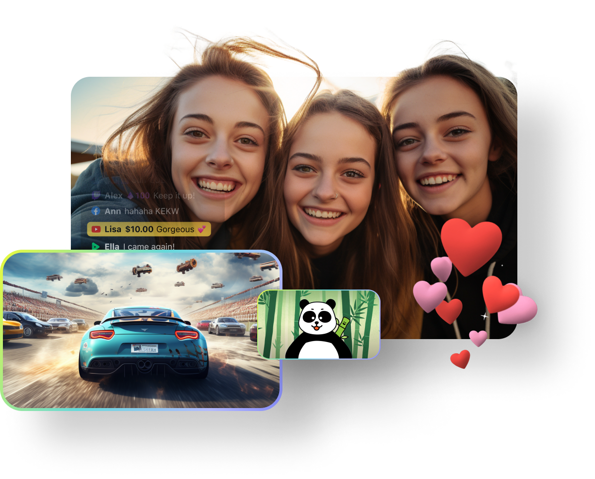
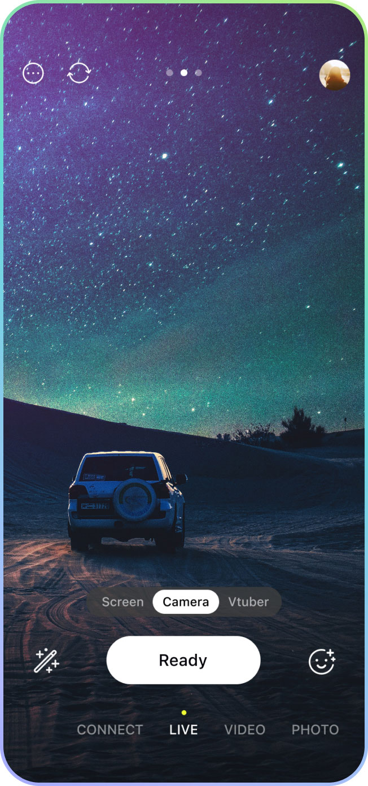
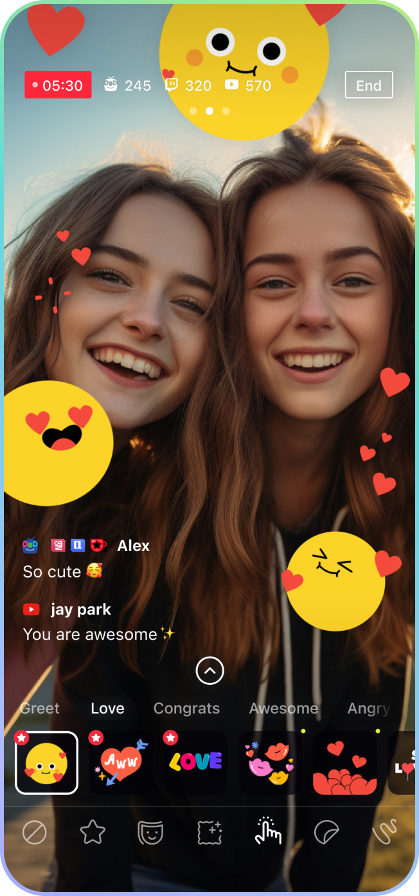
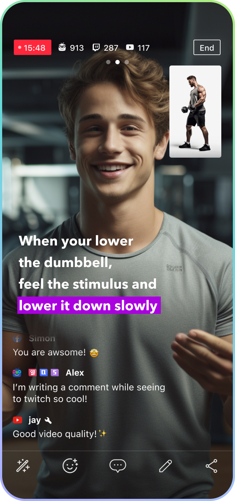
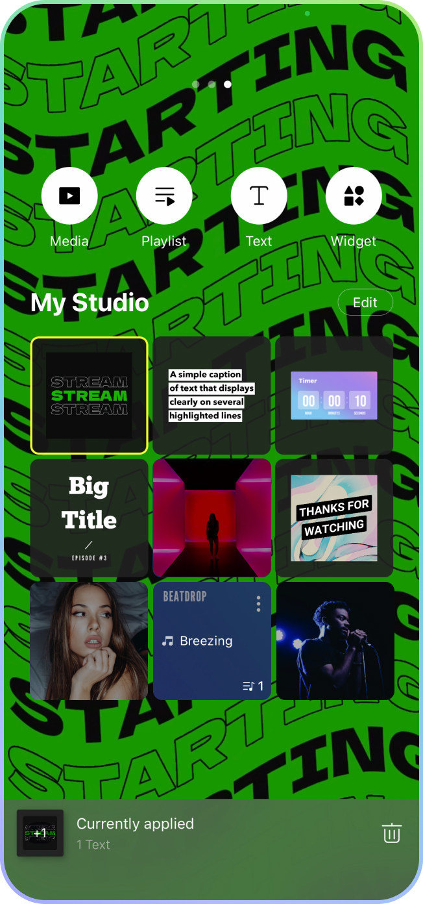
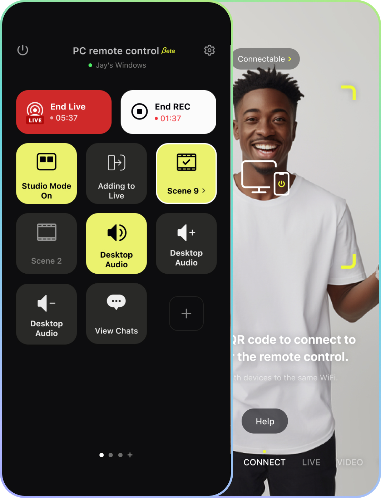

simultaneously.
Connect with YouTube, Twitch, Facebook, SOOP, and NAVER
Shopping Live to stream multiple channels. Increase your viewers with just one stream.

Scan the QR code
to download the mobile app.

Choose between Connect or Live, Video or Photo mode, before starting.
Create a spontaneous live stream, (or) a recorded video with a special
atmosphere, with a webcam source, or a remote control for your PC app.


Employ a range of effects to engage with viewers and craft narratives.
Fun GIPHY GIF stickers are readily available for immediate use during
your streaming.
Effortlessly incorporate text to elevate your streams.
Utilize Motion Text Templates to brand your live channel
or convey diverse information to your viewers.


Enhance your streaming screen in My Studio with free music, chat
windows, widgets, dynamic text, videos, and photos, delighting your
viewers. You can even create intros with various media.
Connect with your PC and mobile devices.
Utilize as a webcam at times, as a remote controller at times
to remote control PRISM Live beyond transmission.

Here are some questions from PRISM Live Studio users.
For complete guides, tips, and more, please visit our Help section.
Using PRISM Live Studio, you can conduct live broadcasts on various platforms such as YouTube,
Facebook, CHZZK, NAVER Shopping Live, BAND, NAVER TV, SOOP, Twitch, and various RTMP URLs.
If you need more information about streaming with platform account login,
go to the help page about connecting to streaming platforms.
In addition, if you want to know how to stream live RTMP keys,
go to the help page about setting up RTMP.
Connect to streaming platforms.
1. Tap the Ready button on the broadcast preparation screen.
2. Move to the platform selection screen.
3. Choose the platform you wish to connect.
• Once you log in to the platform, the streaming platform will be connected automatically.
• After the initial login, you will be able to continually broadcast through the connected
platform.
• To add more platforms, before the Go live stage, select the [My Channel] button > Go to
the platform addition screen > Select the [+] button > Move to the platform selection screen
and add the platform.
Disconnect from streaming platforms.
1. Select [My Channel] > Choose the platform from the list of added platforms > Select the
disconnect button next to the [Platform Name].
2. On the broadcast preparation screen, select the user profile in the upper right corner >
Choose the gear icon on the right of the username > Settings > Select Live Service Accounts
> Click the Disconnect button next to the platform name.
This feature is currently not available and will be reviewed in the future. We apologize as we
cannot provide the exact date
of service as of this moment.
With a PRISM Plus subscription, you can stream to up to 6 channels simultaneously.
(Free users are limited to streaming on a single channel.)
How to Set Up Multi-Streaming
1. Go to the [Add Platform & My Channels] screen.
(For help navigating to this screen, refer to the “Connecting Streaming Platforms”
guide.)
2. In your channel list, toggle the switch next to the platform you want to stream to.
3. When you enable two or more platforms, the Multi-Streaming icon will appear and the system will
automatically switch to multi-streaming mode.
(Note: Naver Shopping Live does not support multi-streaming.)
4. Click the X button at the bottom of the screen to return to the broadcast setup screen.
5. Click the [Go Live] button to start multi-streaming.
1. Select the Ready button on the broadcast preparation screen.
2. Move to the platform selection screen.
3. Choose the platform you want.
4. Select the RTMP manual input button at the bottom of the screen for the chosen platform or
choose Custom RTMP.
5. If you choose Custom RTMP, select the angle bracket to the right of the Stream URL to select
one of the preset lists of popular streaming platforms. Choose the desired RTMP address.
Note: NAVER Shopping Live does not support RTMP.